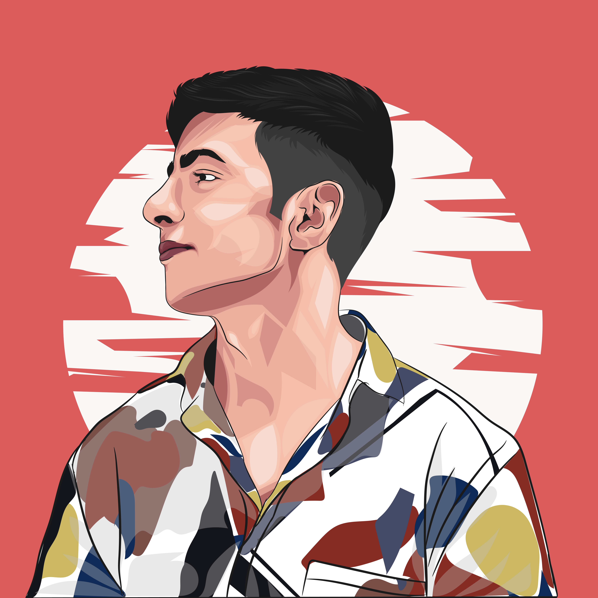

I'm originally from Areni, Armenia, but moved to Yerevan for high school. I started my career in customer support at Globbing while volunteering with local NGOs. Eventually, I became a communication officer at Frontline Youth Network. I relocated to the Netherlands at 18 and worked as an IT help desk technician at Bolt Threads, although the position was later eliminated. I've had a lifelong passion for IT, with a focus on satisfying people's needs. I also love traveling, have a beautiful ragdoll cat, and I'm an Earth-loving vegetarian.